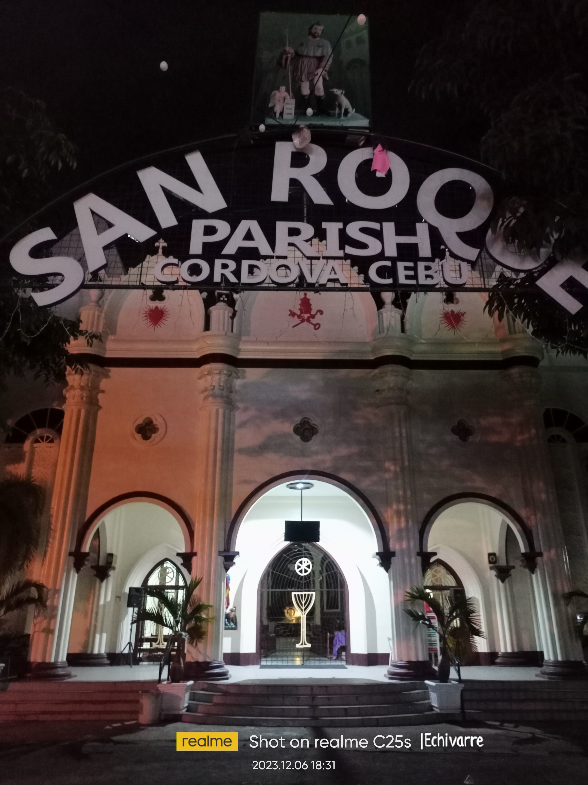

PLAZA CORDOVA is one of the history in cordova , the main christmas tree is located in there it has good and nice view that you ever experience after going to church most of people chilling there and eat theyre snacks or meal ,and yeah cccs student most of them is a common visitors in there and it is located in front of the entrance in Chatolic church.
You can enjoy the place by its lights especially when it's night,the lights is so wonderful and fabulous by its twinkling series lights.
Regarding to people in cordova,Plaza cordova is the most beautiful Christmas lights here in cordova, it makes more people visit there and feel the spirit og Christmas.
SAN ROQUE ROMAN CATHOLIC CHURCH

SAN ROQUE PARISH CHURCH is a history of cordova it is build way back 1863 it is known as the roman catholic church .The San Roque Parish in the town of Cordova stands out because of its Moorish-influenced design with two majestic columns on each side of the facade.
The church is located at the town center,
But before the structure that you now see was built, the residents of the town built a rickety structure made of stones, wood harigues or tabique pampango and a roof of nipa palm, church records said. It was built under Fr. Jose Salazar, the first parish priest. On May 22, 1863, the Cordoba Parish was presented to the Cebu District and was designated San Roque Parish of Cordoba, proclaiming Sr. San Roque as the patron saint.
We should go church every sunday to save our each soul, or lets just say you're too busy to go to church, atleast pray it will good for you.